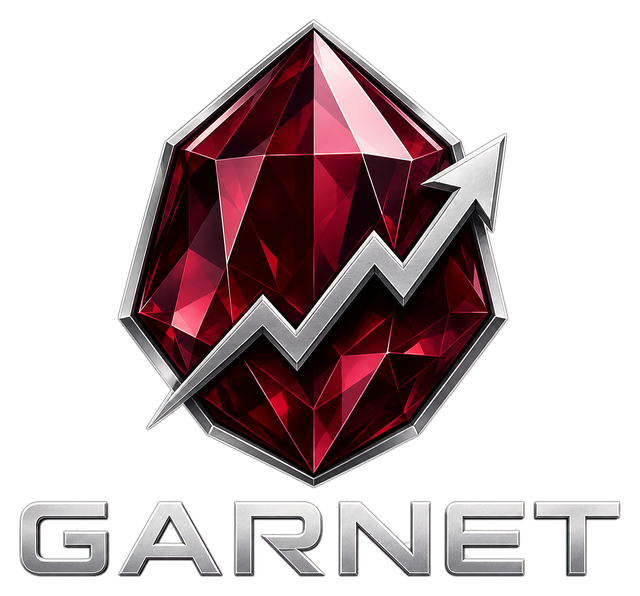

Self-hosted · Rust · Polymarket
The Polymarket copy-trading bot you run yourself
You pick the wallets. Garnet mirrors their trades on your own server, with your own key. No scoring, no screening, no opinions — and a shadow mode that pays the same fees as live, so you can judge a wallet before money follows it.

The uncomfortable truth
A copy-trading bot is worth nothing without profitable wallets to copy. Execution speed, slippage control and settlement accounting only decide how much of someone else's edge survives the trip to your account. They cannot manufacture an edge that isn't there. So Garnet does one thing: you decide which wallets are worth copying, and it copies them — fast, and without second-guessing you.
What it actually does
Detection, sizing, execution, accounting and settlement — each part built around a defect that once cost real money.
Three independent detection circuits
On 31.08.2026 Polymarket's activity/trades topic went down platform-wide for hours. Garnet hears every trade three ways:
- RTDS websocket — the fastest;
/activitypolling — the safety net;- Polygon logs — decoded from the verified V2 ABI, independent of Polymarket's infrastructure.
All three collapse onto one dedup key: a third delivery, not a third truth.
Execution that knows the exchange
- orders are FAK only — a resting order would make you a maker, the opposite of copying a taker;
- size is snapped to the exchange grid, not rounded;
- fill price comes from the trade feed, not from the order;
- "rejected" and "unknown" are different outcomes — retrying an accepted order once bought $2 where $1 was intended.
Live and shadow, side by side
Shadow mode pays the same fee, uses the same order path and reads the same book — otherwise it would flatter itself by exactly the fee you forgot to charge. /matchup then shows your result against the leader's, fees included. The killswitch stops live trading and leaves shadow running.
Accounting reconciled against the chain
Settlement is decided by tokens[].winner and token_id — never by outcome labels like Up/Down or team names. A reconciler compares the ledger with the chain every 10 minutes, and "could not read" is reported as its own outcome, never as "agreed".
Risk controls, and why each exists
Every skipped trade gets one of seven named reasons, so you always know why the bot did not copy something.
| Control | What it does | Why |
|---|---|---|
| Killswitch | stops live trading, keeps positions | lives in the database — a stop that a restart undoes is not a stop |
| Daily loss stop | latches for the UTC day | a bot that merely loses money will not stop on its own |
| Exposure cap | a ceiling per event, not per token | outcomes of one condition are correlated |
| Fire-rate limit | entries per wallet per window | one leader once fired 12 decisions in a minute and caused 94% of the loss |
| Slice window | collapses one leader order into one copy | later slices of an already-copied order lost money |
| Health monitor | measured by flow, not liveness | both guards once reported OK while the bot was blind for 6.5 hours |
Your private key
In 2026 GitHub filled up with "Polymarket copy-trading bots" that shipped the operator's .env to someone else's server, mostly through poisoned npm dependencies. You are right to ask what this one does with your key — and you can check the answer yourself.
Where it lives, where it never goes
- in
.envon your own machine,chmod 600, ignored by git; - it signs orders locally (EIP-712) — the signature goes to the exchange, the key does not;
- it appears in logs as
***REDACTED***, and a test holds that line; - no telemetry, no licence server, no update check.
Check it instead of trusting it
- no npm — the engine is Rust end to end, every crate pinned in
Cargo.lock; - the README lists every host the code talks to, with a one-line
grepto verify it; cargo auditis clean apart from one crate that is not compiled in;- with no keys set, the live path does not come up at all — shadow mode runs on public data alone.
Use a dedicated wallet funded with what you are prepared to lose. Garnet asks for one signing key and never for a seed phrase — anything that asks for a mnemonic to "copy trades" is not a copy-trading bot.
Quick start
Rust stable, Docker for Postgres, Redis and NATS, a Polymarket account with L2 API keys, and a Telegram bot token.
git clone https://github.com/AndreySchurko/garnet-polymarket.git
cd garnet-polymarket
docker compose up -d # Postgres, Redis, NATS
cp .env.example .env # secrets, then chmod 600
cp config.example.toml config.toml
cargo build --release --bin garnet-core --bin garnet-tg --bin garnet-dash
./target/release/garnet-core --config config.toml --preflight # 13 probesThen start in shadow mode, from Telegram:
/add 0xWALLET… copy this wallet from now on
/mode shadow paper trading: same fees, same book
/stake 10 $10 per signal
/health is the flow alive?Run it for a few days and read /pnl, /matchup and /slippage before you consider /mode live. Full instructions are in the README.
Need the wallets, not just the engine?
Wallet Intelligence reports: wallets ranked from on-chain Polymarket history against filters you specify — ROI, trade count, hold time, drawdown, market type — with the metrics that decide how much of an edge survives a taker fill. Reports are data and analysis, not investment advice.
FAQ
Is it profitable?
By itself, no. Garnet has no opinion about which wallets are worth copying — that is the entire design. Run it in shadow mode with wallets you believe in and read /matchup: your result against the leader's, fees included, is the only honest answer.
Is it open source?
It is source-available under the Business Source License 1.1: free for individuals trading their own funds, with the full source to read and audit. Companies and funds need a commercial license. Each version converts to Apache-2.0 four years after release — for v0.1.0, on 2030-09-25.
Can it front-run the leader?
No, and nothing here claims otherwise. Garnet copies trades that have already executed. What it does is avoid losing seconds on top of that — nothing on the hot path waits sequentially when it could wait in parallel — and /latency measures the result end to end, per trade, on your own server.
Where should I run it?
On a VPS close to Polymarket's infrastructure, in a jurisdiction where Polymarket allows trading. The README lists the providers and RPC endpoints the bot has actually been run with.